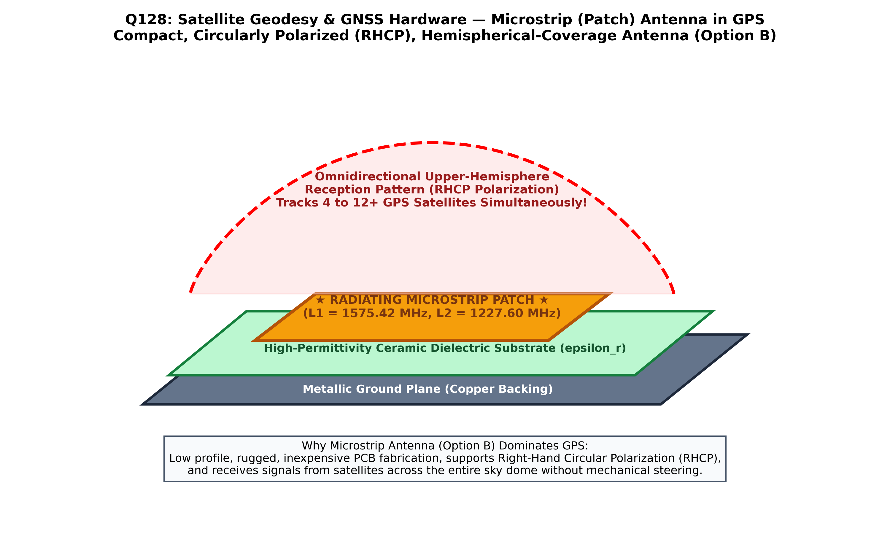

In satellite-based navigation and geodesy (GPS, GLONASS, Galileo, BeiDou, and NavIC), the user receiver antenna is the critical physical transducer that intercepts spaceborne electromagnetic radio-frequency (RF) signals and converts them into high-frequency alternating electric currents for receiver signal tracking.
GPS satellites transmit low-power carrier signals in the L-band (e.g., $L_1 = 1575.42\text{ MHz}$, $L_2 = 1227.60\text{ MHz}$, $L_5 = 1176.45\text{ MHz}$). Because satellite signals must traverse the ionosphere, they are transmitted with Right-Hand Circular Polarization (RHCP) to prevent signal fade caused by ionospheric Faraday rotation. Consequently, GPS receiver antennas must satisfy demanding technical criteria (Hofmann-Wellenhof et al.; Balanis):
| Operational Requirement | Physical / Engineering Reason | How Microstrip (Patch) Antenna Satisfies It |
|---|---|---|
| Right-Hand Circular Polarization (RHCP) | Matches satellite transmission; prevents $3\text{ dB}$ cross-polarization polarization mismatch loss. | Dual orthogonal feeds or trimmed corner patch geometry excites degenerate orthogonal resonant modes with $90^\circ$ phase shift. |
| Hemispherical Gain Pattern | Must track multiple satellites simultaneously from zenith ($90^\circ$) down to low horizons ($5^\circ\text{--}10^\circ$). | Broad, omnidirectional upper-hemisphere radiation pattern with clean horizon rolloff. |
| Compact, Rugged & Low Profile | Must be deployed on airplanes, vehicles, handheld survey devices, smartphones, and missile fuselages. | Planar, printed-circuit board (PCB) construction; ultra-thin ($<5\text{ mm}$ thick) and lightweight. |
| Multipath Rejection | Signals bouncing off ground/buildings reverse polarization to Left-Hand Circular Polarization (LHCP). | Microstrip patch rejects LHCP ground bounce reflections by $15\text{--}25\text{ dB}$, especially when fitted with a choke ring or ground plane. |
| Dual/Multi-Frequency Tuning | Geodetic positioning requires simultaneous $L_1, L_2$, and $L_5$ carrier phase tracking to eliminate ionospheric delay. | Stacked dual-patch or multi-feed resonant microstrip patches easily integrate multiple frequencies. |

Because parabolic dishes (Option A) and horn antennas (Option C) are large, heavy, and highly directional (unable to track multiple distributed satellites across the sky simultaneously), and slotted waveguides (Option D) are complex and narrowband, the Microstrip Antenna (also called patch antenna, Option B) is universally the most widely used antenna in GPS systems worldwide.
Microstrip (patch) antennas consist of a conductive metallic patch printed onto a dielectric substrate backed by a ground plane. They are universally favored in GPS receivers due to their planar low profile, low manufacturing cost, broad hemispherical upper coverage pattern, high reliability, and natural support for Right-Hand Circular Polarization (RHCP).
Parabolic dish antennas produce extremely narrow, highly directional pencil beams designed for point-to-point satellite communication (e.g. VSAT, TV broadcast). A GPS receiver must track 8 to 12 satellites scattered across the entire sky simultaneously; a directional dish cannot do this.
Pyramidal and conical horn antennas are bulky waveguide structures used primarily as calibration standards and feed horns for microwave dishes in laboratory test benches. Their weight, three-dimensional bulk, and directional beam make them entirely unsuitable for field GPS receivers.
Slotted waveguide antennas are used in high-power airborne and marine radar arrays for fan-beam scanning. They lack hemispherical circular polarization and are far too large and expensive for commercial and geodetic GPS applications.
| Antenna Design Type | Beam Directivity | Polarization | Size & Form Factor | Suitability for GNSS / GPS |
|---|---|---|---|---|
| Microstrip (Patch) Antenna (Option B) | Broad Hemispherical ($>160^\circ$ beamwidth) | RHCP (Circular) | Ultra-compact, flat planar disc/square ($<5\text{ cm}$) | Universally Ideal: Standard in smartphones, cars, aircraft, and geodetic rovers. |
| Choke Ring Antenna | Hemispherical with steep low-elevation cutoff | RHCP (Circular) | Microstrip patch mounted inside concentric metallic rings ($~35\text{ cm}$) | Geodetic Reference Standard: Eliminates multipath for permanent IGS base stations. |
| Helical (Quadrifilar) Antenna | Broad cardioid beam | RHCP (Circular) | Cylindrical spiral wire ($~10\text{ cm}$ tall) | Common on handheld Garmin receivers and drones; high horizon gain. |
| Parabolic Dish Antenna (Option A) | Extremely narrow pencil beam ($<2^\circ$) | Linear or circular | Bulky concave reflector ($0.5\text{--}30\text{ m}$) | Unusable for GPS tracking; used for deep-space telemetry. |
| Standard Dipole / Monopole | Toroidal omnidirectional | Strictly Linear | Thin wire/rod | Poor: Suffers $3\text{ dB}$ polarization loss and severe multipath. |